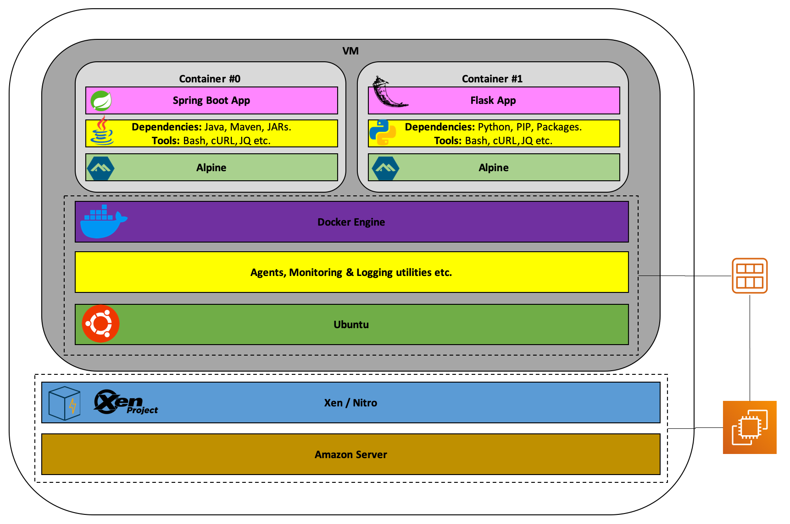

Docker Introduction¶
What is a Container?¶
A standardized unit of software
A container is a standard unit of software that packages up code and all its dependencies so the application runs quickly and reliably from one computing environment to another
https://www.docker.com/resources/what-container
Containers 101¶
Containers offer a logical packaging mechanism in which applications can be abstracted from the environment in which they actually run. This decoupling allows container-based applications to be deployed easily and consistently, regardless of whether the target environment is a private data center, the public cloud, or even a developer’s personal laptop. Containerization provides a clean separation of concerns, as developers focus on their application logic and dependencies, while IT operations teams can focus on deployment and management without bothering with application details such as specific software versions and configurations specific to the app.
https://cloud.google.com/containers?hl=en
What’s a Linux container?¶
A Linux® container is a set of one or more processes that are isolated from the rest of the system. All the files necessary to run them are provided from a distinct image, meaning that Linux containers are portable and consistent as they move from development, to testing, and finally to production. This makes them much quicker than development pipelines that rely on replicating traditional testing environments. Because of their popularity and ease of use containers are also an important part of IT security.
https://www.redhat.com/en/topics/containers/whats-a-linux-container
Docker¶
A Docker container image is a lightweight, standalone, executable package of software that includes everything needed to run an application: code, runtime, system tools, system libraries and settings.
Container images become containers at runtime and in the case of Docker containers - images become containers when they run on Docker Engine.
Docker containers that run on Docker Engine:
Standard: Docker created the industry standard for containers, so they could be portable anywhere
Lightweight: Containers share the machine’s OS system kernel and therefore do not require an OS per application, driving higher server efficiencies and reducing server and licensing costs
Secure: Applications are safer in containers and Docker provides the strongest default isolation capabilities in the industry
Container vs Virtual Machines¶
CONTAINERS¶
Containers are an abstraction at the app layer that packages code and dependencies together. Multiple containers can run on the same machine and share the OS kernel with other containers, each running as isolated processes in user space. Containers take up less space than VMs (container images are typically tens of MBs in size), can handle more applications and require fewer VMs and Operating systems.
VIRTUAL MACHINES¶
Virtual machines (VMs) are an abstraction of physical hardware turning one server into many servers. The hypervisor allows multiple VMs to run on a single machine.
Each VM includes a full copy of an operating system, the application, necessary binaries and libraries - taking up tens of GBs. VMs can also be slow to boot
x


Containers && Virtual Machines¶

[https://medium.com/better-programming/containers-and-virtual-machines-an-overview-94c558905b6]
Docker Architecture¶

Install¶
https://docs.docker.com/install/
Demo¶
%%bash
docker --version
Docker version 19.03.13-beta2, build ff3fbc9d55
Hello World¶
%%bash
docker run hello-world
Hello from Docker!
This message shows that your installation appears to be working correctly.
To generate this message, Docker took the following steps:
1. The Docker client contacted the Docker daemon.
2. The Docker daemon pulled the "hello-world" image from the Docker Hub.
(amd64)
3. The Docker daemon created a new container from that image which runs the
executable that produces the output you are currently reading.
4. The Docker daemon streamed that output to the Docker client, which sent it
to your terminal.
To try something more ambitious, you can run an Ubuntu container with:
$ docker run -it ubuntu bash
Share images, automate workflows, and more with a free Docker ID:
https://hub.docker.com/
For more examples and ideas, visit:
https://docs.docker.com/get-started/
List Images¶
%%bash
docker image ls
REPOSITORY TAG IMAGE ID CREATED SIZE
docker latest e036013d6d10 5 days ago 224MB
ubuntu latest 72300a873c2c 2 weeks ago 64.2MB
hello-world latest fce289e99eb9 14 months ago 1.84kB
List Containers¶
%%bash
docker container ls --all
CONTAINER ID IMAGE COMMAND CREATED STATUS PORTS NAMES
5eb5cfdd46c8 hello-world "/hello" 4 minutes ago Exited (0) 4 minutes ago great_spence
5c27ec4fd27f hello-world "/hello" 7 minutes ago Exited (0) 7 minutes ago magical_bassi
dda9ed941796 ubuntu "/bin/bash" 3 days ago Exited (0) 3 days ago recursing_brattain
8e606a6facad docker "docker-entrypoint.s…" 3 days ago Exited (2) 3 days ago hungry_bardeen
3cfff94d066f docker "docker-entrypoint.s…" 3 days ago Exited (1) 3 days ago objective_cori
c317edabb3ca hello-world "/hello" 5 days ago Exited (0) 5 days ago quirky_rosalind
05cb8cca7aa4 hello-world "/hello" 5 days ago Exited (0) 5 days ago suspicious_beaver
Docker Container Name¶
Automatic¶
Docker container have an id and a name, if not specified is generated automatically by an algoritm [https://github.com/moby/moby/blob/master/pkg/namesgenerator/names-generator.go]
if name == "boring_wozniak" /* Steve Wozniak is not boring */ {
goto begin
}
Ubuntu¶
docker run -it ubuntu
Docker Components¶
Images¶
An image is a read-only template with instructions for creating a Docker container. Often, an image is based on another image, with some additional customization. For example, you may build an image which is based on the ubuntu image, but installs the Apache web server and your application, as well as the configuration details needed to make your application run.
You might create your own images or you might only use those created by others and published in a registry. To build your own image, you create a Dockerfile with a simple syntax for defining the steps needed to create the image and run it. Each instruction in a Dockerfile creates a layer in the image. When you change the Dockerfile and rebuild the image, only those layers which have changed are rebuilt. This is part of what makes images so lightweight, small, and fast, when compared to other virtualization technologies.
Containers¶
A container is a runnable instance of an image. You can create, start, stop, move, or delete a container using the Docker API or CLI. You can connect a container to one or more networks, attach storage to it, or even create a new image based on its current state.
By default, a container is relatively well isolated from other containers and its host machine. You can control how isolated a container’s network, storage, or other underlying subsystems are from other containers or from the host machine.
A container is defined by its image as well as any configuration options you provide to it when you create or start it. When a container is removed, any changes to its state that are not stored in persistent storage disappear.
Docker Hub¶
https://docs.docker.com/docker-hub/
Docker run¶
https://docs.docker.com/engine/reference/commandline/run/
Visual Studio Code Integration¶
https://code.visualstudio.com/docs/containers/overview